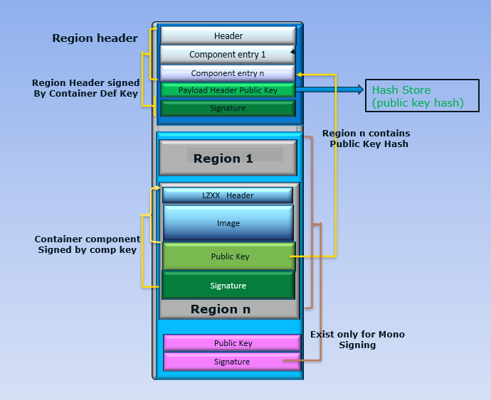
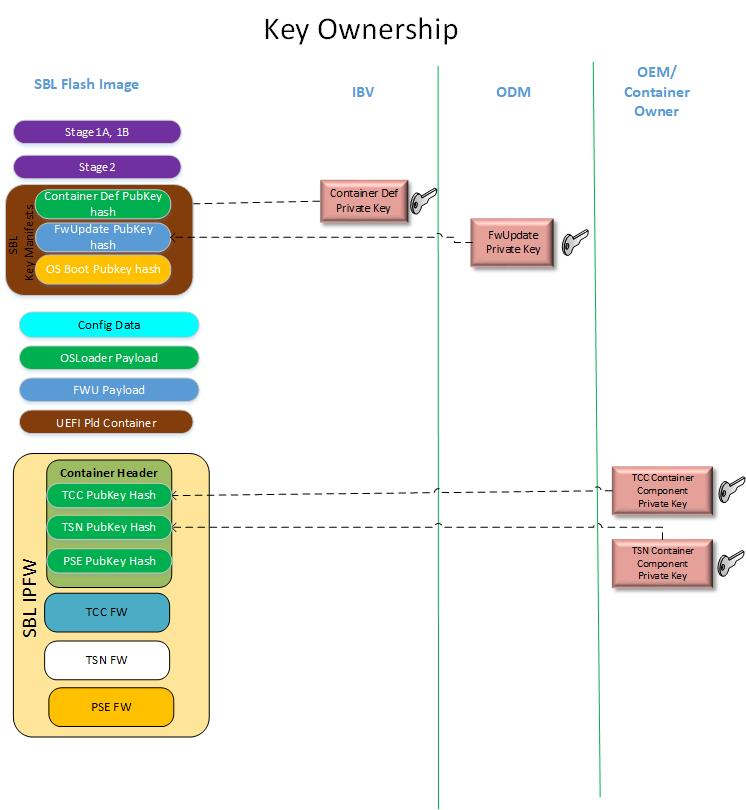

Container Security
Container in SBL is a method for sub region support. Its an encapsulation of multiple components as depicted in the image below.
Container
Container region header encapsulates details about its components and public key hashes or component hashes. Container header has to be signed using RSA private key. Respective public key hash would be store in SBL Hash Store and it is verified while container gets registered.
Components
Component region can be added as compressed form or raw images. These region supports both hash verification and siging with RSA private keys. Public key hash or component hash would be stored in container main header. These hashes would be verified when components get loaded.
Mono Signing
Mono signing is a method in which all components region would be signed in a single shot and verified using RSA or with hash verification.
Refer Container Tool for details on container format and for its creation.
Auth Types Supported
Slimboot container and its components can be signed and it can be authenticated by using the following authorization types.
Auth Type |
Description |
||
|---|---|---|---|
SHA2_256 |
SHA256 hash verification |
||
SHA2_384 |
SHA384 hash verification |
||
RSA2048_PKCS1_SHA2_256 |
RSA signed for key size 2048, sha256 hash & PKCS1.5 padding |
||
RSA3072_PKCS1_SHA2_384 |
RSA signed for key size 3072, sha384 hash & PKCS1.5 padding |
||
RSA2048_PSS_SHA2_256 |
RSA signed for key size 2048, sha256 hash & PSS padding |
||
RSA3072_PSS_SHA2_384 |
RSA signed for key size 3072, sha384 hash & PSS padding |
||
NONE |
No Authorization. Supported only for sub region components |
Container Formats
Container supports following signatures methods. OEM’s can define the methods as per their usecase. Corresponding public key hashes need to be enrolled in SBL hash store.
Signature |
Key for Signing container header |
||
|---|---|---|---|
BOOT |
KEY_ID_OS1_PRIVATE_RSA3072 (OS Key) |
||
KEYH |
KEY_ID_MASTER_RSA3072 (Master Key) |
||
OEM Defined |
OEM to define and add to signing scripts |
||
IPFW and others |
KEY_ID_CONTAINER_RSA3072 (Container Def Key) |
BOOT
This is for booting a OS kernel image. Refer Create Container Boot Image for creation of bootable format. Bootable container image is signed with RSA private key and the corresponding hash is stored in SBL Hash store.
KEYH
This is used external hash store creation. SBL maintains a loadable “Hash Store” to save digests of public keys used to sign external loadable by the bootloader.
OEM Defined
OEM can define their container methods.
Container Firmware
Signatures defined apart from above category would fall in this category.
This section provides an overriew of container format for firmware stored in flash. IPFW is container signature used widely in SBL for components as PSE, TSN, TCC and so.
Key Requirement and Ownership
This picture depicts the various keys used for container components update on flash.
Container Def Key - This key is used to sign the container header. Respective public key hash is stored in SBL hash store.
Container Component Key - This key is used to sign the components inside the container. Public key hash is stored in container header.
FwUpdate Key - Private Key used to sign the capsule firmware blob. Respective public key hash is stored in SBL hash store.
Container Component Update Flow
Sign the raw component binary using Container Tool Sign command
Generate the capsule firmware update image using Firmware Update tool.
Perform the capsule image update to update the respective component region :ref:’firmware-update’